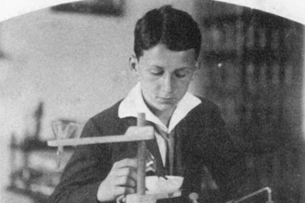
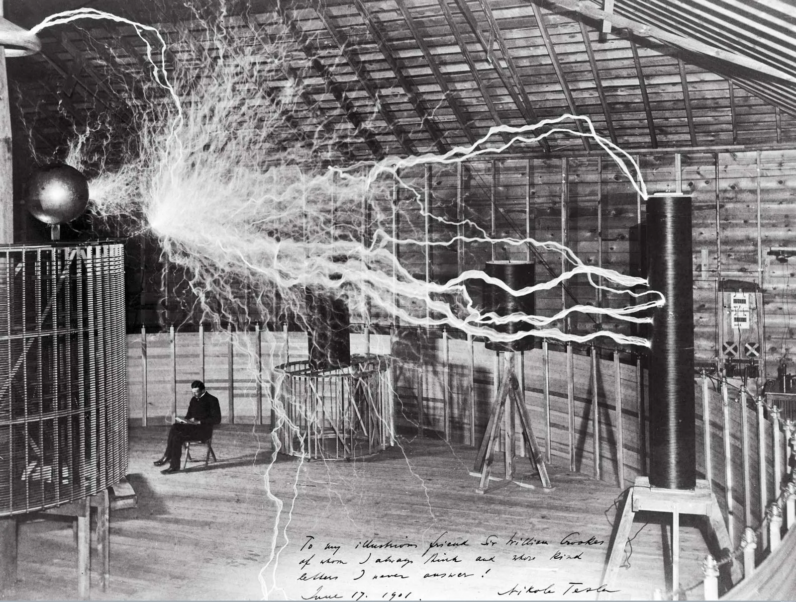
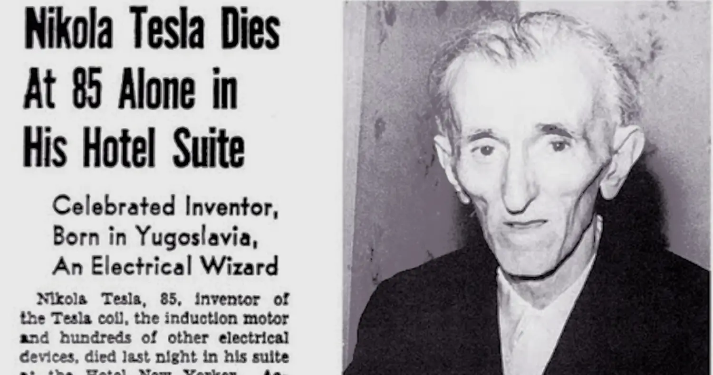
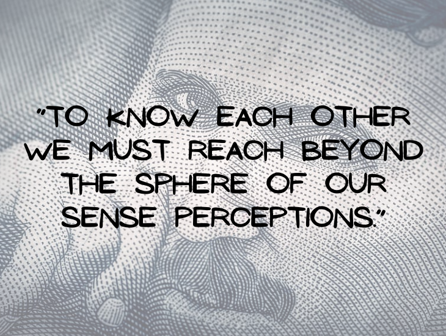

Nikola Tesla
Early Life and Education:
- Born on July 10, 1856, in Smiljan, Austrian Empire (now Croatia).
- His father was an Orthodox priest, and his mother was the daughter of a priest and known for her inventions.
- Tesla studied at the Realschule, Karlstadt, the Polytechnic Institute in Graz, and the University of Prague.
- He initially intended to specialize in physics and mathematics, but became fascinated with electricity.

Career and Inventions:
- Tesla began his career in Budapest at a telephone company.
- He moved to the United States in 1884 and worked briefly for Thomas Edison.
- He invented the Tesla coil, an induction coil used in radio technology.
- He also developed the three-phase system of electric power transmission.
- Tesla's inventions include an AC induction motor and various other electrical and mechanical devices.
- He conducted experiments with wireless communication, including a wirelessly controlled boat.

Later Life and Death:
- Tesla received over 300 patents for his inventions.
- He continued to work on various projects throughout his life, including wireless power transmission.
- Tesla's most significant contribution was the development of the AC electrical system.
- Despite dying in relative obscurity, Tesla’s legacy grew immensely after his death, and today he is recognized as one of the greatest inventors and visionaries in history.

